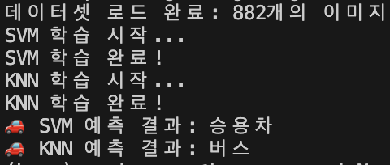

Machine-Learning
"머신러닝(machine-learning)"은 컴퓨터가 데이터에서 학습, 프로그래밍 없이 스스로 판단하는 기술입니다.
쉽게 말해, 사람이 직접 규칙을 코드로 작성하지 않고, 컴퓨터가 데이터를 보고 규칙을 스스로 찾는 것입니다.
종류로는 정답이 있는 데이터를 학습하여 새로운 데이터를 예측하는 '지도 학습'과 정답 없이 데이터를 그룹으로 나누는 '비지도 학습',
시행착오를 반복하며 최적이 행동을 학습하는 '강화 학습'이 있습니다.
데이터 수집 - 특징 추출 - 모델 학습 - 모델 평가 - 예측의 과정을 거쳐 머신러닝이 동작합니다.
SVM & KNN algorithm
1. 프로젝트 소개
승용차, 트럭, 버스의 이미지를 머신러닝으로 학습시킨 후,
차량 이미지를 SVM 알고리즘과 KNN 알고리즘으로 인식한 결과들을 나타내게 합니다.
| 개발 기간 및 과정 |
2025.02 ~ 현재진행형 1. 계획 수립 2. 데이터셋 로드를 위한 폴더 생성 및 이미지 첨부 3. HOG 특징 추출 4. SVM 모델 학습 5. KNN 모델 학습 6. 테스트 데이터 예측 7. 포트폴리오 제작 |
|---|---|
| 개발 인원 | 박성수: 전체 프로젝트 기획 및 개발 |
| 기술 스택 및 개발 환경 |
기술 스택: C++, Machine Vision, Machine Learning 소프트웨어: Visual Studio Code, OpenCV |
| 깃허브 주소 | https://github.com/parkss1324/ML_Cpp_Project |
2. 데이터셋 로드를 위한 폴더 생성 및 이미지 첨부
데이터셋 로드를 위해 폴더가 만들어 진 경로를 설정합니다.
또한 폴더에 학습할 이미지를 첨부합니다.
3. HOG 특징 추출
'HOG(Histograms of Oriented Gradients)'는 그래디언트(기울기) 방향 히스토그램을 의미합니다.
그래디언트의 분포를 일정 규칙에 의해 저장하고 이와 유사한 그래디언트 분포를 띄는 이미지가 입력되면 인식하는 원리입니다.

4. SVM 모델 학습
'서포트 벡터 머신 알고리즘(SVM, Support Vector Machine)'은 기본적으로 두 개의 클래스로 구성된 데이터를
가장 여유 있게 분리하는 '초평면(Hyperplane)'으로 찾는 머신러닝 알고리즘입니다. 지도 학습의 일종이며, 분류와 회귀에 사용될 수 있습니다.
파란색 사각형과 빨간색 원으로 표시된 두 클래스 사이에 초평면을 이용하여 분할합니다.
초평면에 가장 가까이 있는 데이터들을 '서포트 벡터', 초평면과 가장 가까이 있는 파란색 사각형 또는 빨간색 원의 거리를 '마진'이라고 합니다.
모델 학습 관련 코드
5. KNN 모델 학습
'K 최근접 이웃 알고리즘(KNN, K-Nearest Neighbor)'은 특정 공간에서 테스트 데이터와 가장 가까운 K개의 훈련 데이터를 찾고,
K개의 훈련 데이터 중에서 가장 많은 클래스를 테스트 데이터의 클래스로 지정하는 머신러닝 알고리즘입니다. 지도 학습의 일종이며, 분류와 회귀에 사용될 수 있습니다.
실선 동그라미에서 빨간색 삼각형 클래스를 지정하는 것이 더 합리적이지만, 점선 동그라미에서 파란색 사각형 클래스로 지정하는 것이 더 합리적입니다.
이러한 방식으로 분류하는 방법을 KNN 알고리즘이라고 합니다.
모델 학습 관련 코드
6. 테스트 데이터 예측
분류할 이미지 경로를 설정하고 그 이미지에 대해 SVM, KNN 알고리즘을 수행합니다.
알고리즘에 따라 분류된 이미지가 출력 창에 나타납니다.
동작 결과를 다음과 같이 얻을 수 있습니다.
학습한 데이터셋 수와 예측 결과 출력
7. 느낀 점(회고)
| 머신비전과 머신러닝의 활용 |
C++을 배우고 이 프로그래밍 언어를 기반으로 머신비전을 공부하여 얼굴 인식, 차량 번호 인식, 차선 검출 등을 구현하며 역량을 기르고 있었습니다. 이 후, 머신러닝에 대한 개념을 배우게 되며 머신비전 기술을 접목시켜 알고리즘을 활용한 이미지 분류에 대한 개발에 도전하게 되었습니다. 머신비전과 관련 있는 SVM, KNN 알고리즘을 구현해보면서 더 전문성 있는 머신비전 개발자가 될 수 있는 시간이었습니다. |
|---|---|
| 사용 분야의 범위 응용 |
만든 포트폴리오는 차량 종류를 구별하는 기능이지만, 데이터셋을 다르게 하여 다양한 기능으로 활용할 수 있습니다. 충돌, 전복, 보행자 사고 등 교통 사고 유형을 분류할 수 있으며 빙판길, 침수길 등 도로 상태도 확인할 수 있습니다. 제조업 분야에서는 불량품을 탐지 및 작업자의 안전 관리, 스포츠에서 운동 자세 및 공의 궤적 분석 등 활용 분야를 넓힐 수 있습니다. |
| 딥러닝 분야 확장 |
개발 영역 확장을 위해 딥러닝을 활용한 포트폴리오도 계획 중입니다. 딥러닝에 더 최적화된 프로그래밍 언어인 Python을 사용하여 동영상을 기반으로 관련 기능을 수행하는 코드를 만들 예정입니다. 현재 다양한 신기술들이 나오는 분야인만큼 최신 기술을 머신비전에 적용할 것입니다. |